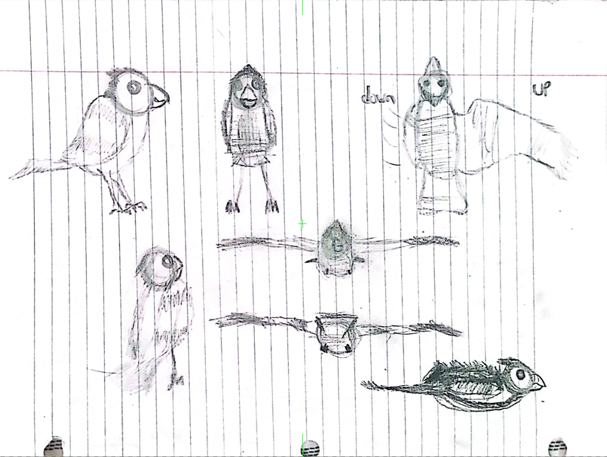
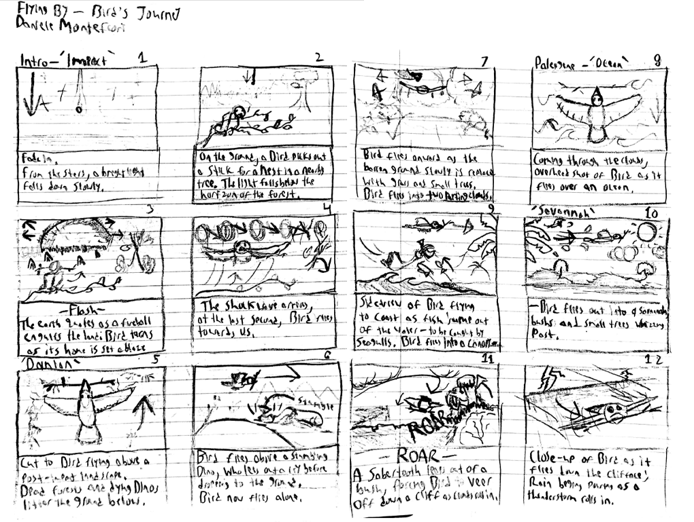
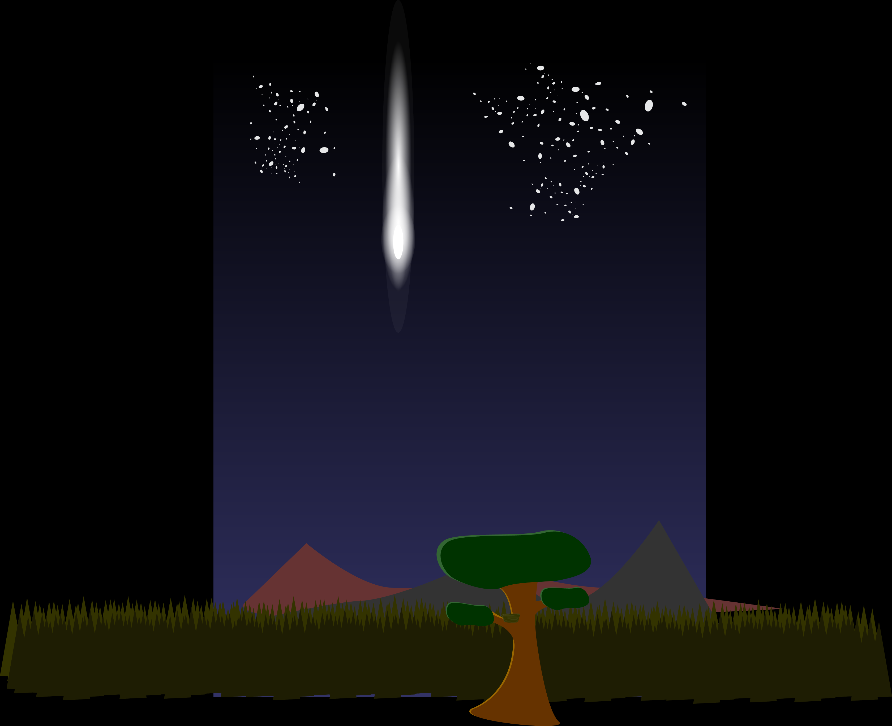

Case Study: "Flying By -- A Short Animation Project"
Type: Design and Animation | Duration: 1 1/2 Months
Product: Short 2D Animation with Original Character
Flying By is a short 2D animation project I created as part of my Intro to 2D Animation course in the Fall of 2024, during I time I elected to focus on Interactive Media studies that focused on topics not immediately related to my interest in Game Design but which I partook in both to hopefully broaden my skill set and understanding of other facets of the field, as well as to learn techniques that I might be able to apply in my work in game design in some capacity. I had done so prior to this project as well as a freshman and sophmore, including taking a filmmaking course to learn about how to craft a compelling narrative, so my main goal for this project was to create a visually engaging story that applied those lessons I had learned while also giving me the opportunity to begin delving into character design and worldbuilding in a much more visual way.
The final project was formulated at a time when I was deeply fascinated with birds and their status as the last remaining dinosaurs, which I found to be a solemn metaphor for perseverance and adaptation in the face of adversity. Right from the beginning, I had this idea of my animation starring a small bird surviving the extinction of the (non-avian) dinosaurs and flying through time to arrive in the present day.

The initial reference for the main character's design.
During the production of Flying By, I was able to expand my skills in character design and animation, with the big challenge being the fact that the main character was a small bird that obviously couldn't mimic human expressions. The majority of the work was done in Adobe After Effects, with all of the assets created in Adobe Illustrator and Photoshop. The initial concept art and character designs as well as storyboarding, however, was pencil and paper--and I found that this traditional approach allowed for more organic and fluid designs to emerge, as well as personally helped to ground me to the project itself before overwhelming myself with digital tools. When I did move to the digital phase, I found that having that solid, paper foundation made the process much smoother.

Storyboarding for the main character's flight through time.
Once I outlined all of the scenes, I went about creating the various assets needed for the animation, including backgrounds and grouped elements for complicated designs and actions (i.e., characters such as the bird and the prehistoric man; or interactions such as the bird perching on an arm). I would include all relevant environmental elements for a scene in the same Illustrator file and then import that file into After Effects where I could then animate each element of the scene individually. This allowed me to create a more dynamic and engaging animation, as I could manipulate each element separately to create depth and movement--and was ultimately more efficient than animating everything from scratch as I could pre-compose the elements rather than having to create each one individually on the fly so long as I knew what elements and interactions would be in a scene ahead of time.

The first background scene, covering the title and the meteor impact.

The end product was a minute-and-a-half long animation that I was very proud of, especially considering the limited time frame I had to complete it in alongside my other coursework--with the entire process from initial concept to final render taking roughly a month and a half--and the fact that it was my very first animation project. The final animation can be viewed above!
The various sound effects and background music were all sourced from Freesound.org.